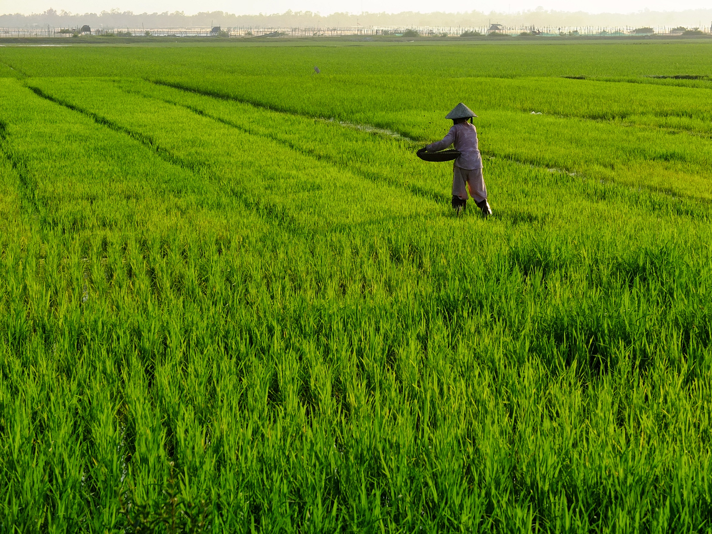
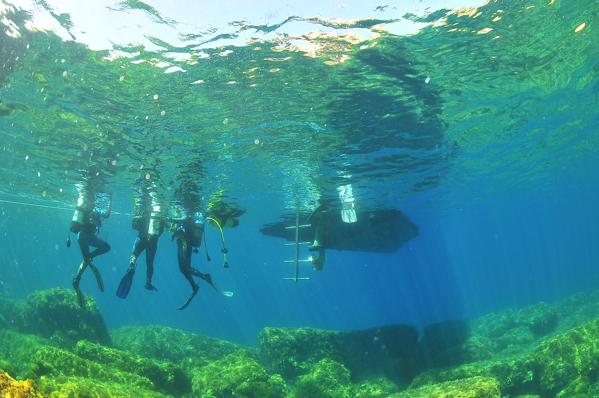

About me
I was born in Brasov, a city in the Transylvania region of Romania. Transylvania is best known as the mysterious land of bloodthirsty vampires and howling wolves. But there is more to Transylvania than castles and vampire legends. Romania's central region draws nature lovers with its spectacular alpine peaks and the largest brown bear population in Europe.
My hometown is one of Transylvania's most visited towns thanks to an overload of baroque architecture and a bohemian atmosphere. It also makes an excellent base for exploring the great outdoors, being bordered by the Carpathian Mountains.
Now I'm leaving in Amsterdam for 5 years already. I like it so much, that I decided to stay.
Because I had a hard time finding a job on HR, my field of study, I decided to switch carriers. My boyfriend is a developer and he introduced me to coding. I find it interesting to see how a web page really looks underneath. In the future I would like to find a job as a Junior Front End Developer.
Things I like to do:
-
Travel - My biggest dream is to travel for a couple of months and see the world. I don't have a plan yet, but I definitely want to see JAPAN!
 -
Reading - I like reading in my spare time. I try to read a bit everyday before going to bed. I'm am a huge Harry Potter fan... I know... geek alert!, but I could read it on and on.

-
Scuba diving - I got my advanced open water diving certification 2 years ago. I was terrified at first, but after my first 2 dives I was already seeing myself being a diving instructor, living the island dream. Fun fact - I'm still afraid to jump in the water :))
 -
Playing games - board games, computer games. Best games from both categories are: Ticket to Ride The Witcher and Sims.